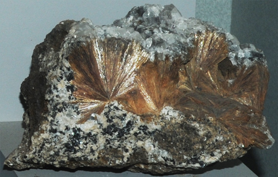

|

| Ca2Mn7Si10O28(OH)2.5H2O
This sample of inesite is displayed in the Smithsonian Museum of Natural History. Inesite is a silicate mineral with the composition Ca2Mn7Si10O28(OH)2.5H2O. The sample at left is about 20 cm across and is from Broken Hill, New South Wales, Australia. It is described as inesite with apophyllite.
|